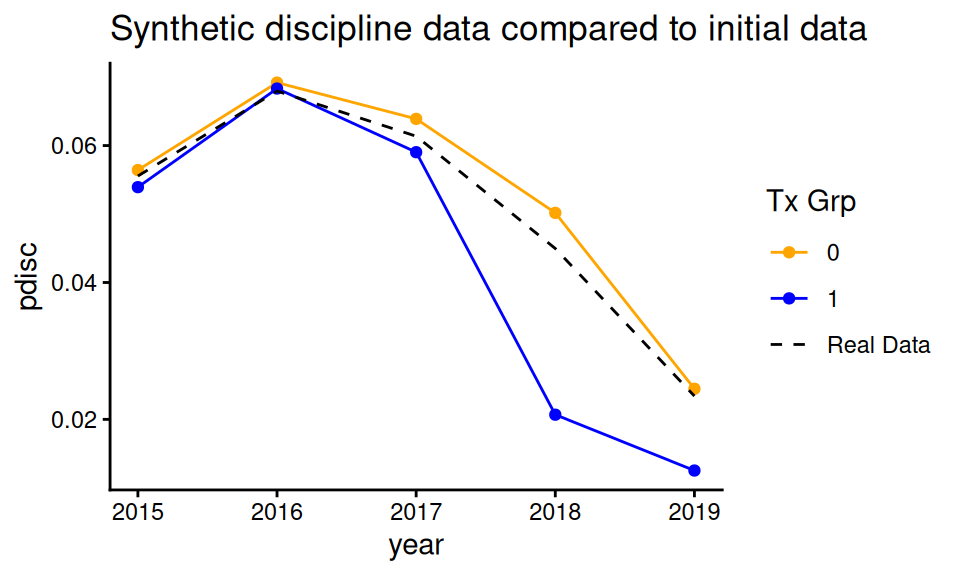
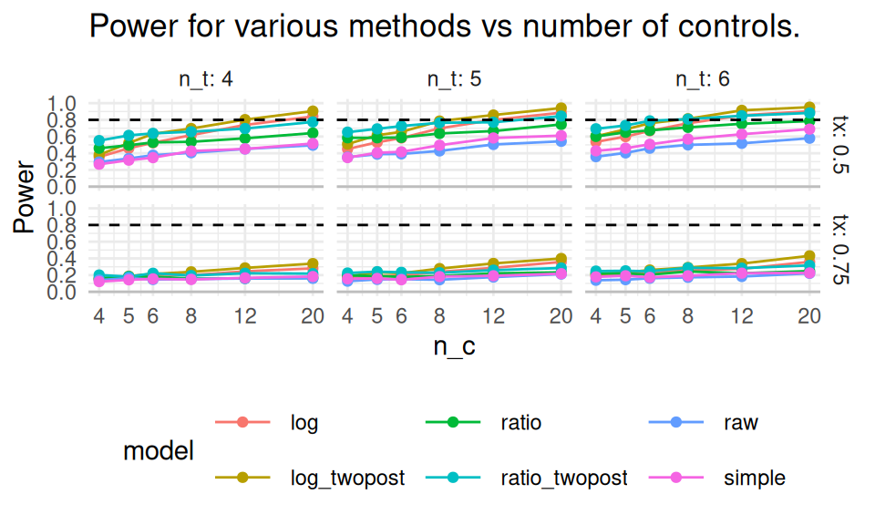

We can use simulation as a power calculator. In particular, to estimate power, generate data according to a best guess as to what we might find in a planned evaluation, and then analyze the data to see if the effect built into the DGP is detectable. The average chance of detection across multiple trials of simulated data is power.
Now, if we are generally right about our DGP, and the associated parameters we plugged into it, being an accurate model of the world, then our power will be right on. Estimating the chance of detection given a working model of the world is all a power analysis is, using simulation or otherwise. A power analysis simulation should, in other words, be a calibrated simulation.
Simulation has benefits over using power calculators for two reasons. First, it is easy to take into account special circumstances we might want to account for such as missing values or non-normal distributions. Second, it is easy to assess non-standard approaches to evaluation that we might not be able to find in an off-the-shelf power calculator. In particular, we can compare different proposals for how we would analyze our data, to see which ones are most powerful (and also verify that they are not biased or otherwise broken).
We illustrate these ideas with a case study. In this example, we are planning a school-level intervention to reduce rates of discipline via an intervention on both teachers and students that targets socio-emotional skills.
We are planning a planned randomized controlled trial (RCT), where we will treat entire schools (so this is a cluster-randomized study). Power is a concern because treating each school is very expensive (we have to run a large training program and also provide coaching of the staff), so treating each unit is a major decision. Ideally, we want something like 4, 5, or maybe 6 treated schools. Our diving question is: Can we get away with this? And does it help at all if our control group is larger, even if the treatment group is tiny?
Our outcome is the discipline rate at the school level for one and two years after treatment. We know we will have three years of baseline rates of discipline that we can use as a school-level covariate. After some initial brainstorming, we generated a list of different possible regression models we might use, such as using prior years discipline rates as a control in a simple linear regression, or using a two-way fixed effects model. Our second question is then: Are these models valid in this context, and which one is best?
19.1 Getting design parameters from pilot data
Power analyses, via simulation or otherwise, depend on our assessment of what the data will look like when we finally do our analysis. In our case, we have pilot data from school administrative records (in particular discipline rates for each school and year for a series of five years), and we will use those to estimate parameters to plug into our simulation. We assume our experimental sample will be on schools that have chronic issues with discipline, so we filtered our historic data to get those schools most likely be in our study. Our assumption is that the data we are using for our simulation look like the data we would see (for the control group) when we actually run our experiment.
Here are our data, with each row a potential school in the district:
Our first step is to write a data generator that, given a desired number of control and treatment schools, and a hypothesized treatment effect, makes a synthetic dataset by generating time series of discipline rates, and then imposes a “treatment effect” of scaling the discipline rate by the treatment coefficient for the last two years.
We first summarize our five years of pilot data to estimate a mean and variance-covariance matrix on the log-transformed rates (we used the log transform to put things on a multiplicative scale, and to make the distribution of rates more normal, given a heavy skew in the original):
To generate fake schools, we then sample from a multivariate normal distribution with the estimated mean and covariance structure. Here is our DGP function, make_dat_param(), that does this:
make_dat_param =function( n_c, n_t, tx=1 ) { n = n_c + n_t lpdisc = MASS::mvrnorm( n, mu = lpd_mns, Sigma = lpd_cov ) lpdisc =exp( lpdisc )colnames( lpdisc ) =paste0( "pdisc_", colnames( lpdisc ) ) lpdisc = dplyr::as_tibble( lpdisc ) %>% dplyr::mutate( ID =1:(dplyr::n()),Z =0+ ( sample( n ) <= n_t ) )# Add in treatment effect lpdisc = dplyr::mutate( lpdisc, pdisc_2018 = pdisc_2018 *ifelse( Z ==1, tx, 1 ),pdisc_2019 = pdisc_2019 *ifelse( Z ==1, tx, 1 ) ) lpdisc %>% dplyr::relocate( ID, Z )}
Our function generates schools with discipline given by the provided mean and covariance structure; we have calibrated our data generating process to give us data that looks very similar to the data we would see in the field. For power, realism, in terms of the aspects impacting uncertainty, is key.
For our impact model, the treatment kicks in for the final two years, multiplying discipline rate by tx (so tx = 1 means no treatment effect).
We test our function, hypothesizing the treatment reduces discipline by 50% in the two follow-up years:
set.seed( 594585 )a =make_dat_param( 100, 100, 0.5 ) print( a, n =4 )
We can group each treatment arm and look at discipline over the years for our synthetic dataset:

Our treatment group drops faster than the control. We also see the nonlinear structure actually observed in our original data in terms of discipline over time has been replicated (original data is in black).
We next implement all of our candidate treatment effect estimators. This should all feel very familiar: we are just doing our simulation framework, as usual.
eval_dat =function( sdat, include_FE =TRUE ) {# No covariate adjustment, average change model (on log outcome) M_raw =lm( log( pdisc_2018 ) ~1+ Z, data=sdat )# Simple average change model using 2018 as outcome. M_simple =lm( pdisc_2018 ~1+ Z + pdisc_2017 + pdisc_2016 + pdisc_2015,data=sdat )# Simple model on logged outcome M_log =lm( log( pdisc_2018 ) ~1+ Z +log( pdisc_2017) +log( pdisc_2016) +log( pdisc_2015 ),data=sdat )# Ratio of average disc to average prior disc as outcome sdat = dplyr::mutate( sdat,avg_disc = (pdisc_2018 + pdisc_2019)/2,prior_disc = (pdisc_2017 + pdisc_2016 + pdisc_2015 )/3,disc = pdisc_2018 / prior_disc,disc_two = avg_disc / prior_disc ) M_ratio =lm( disc ~1+ Z, data = sdat ) M_ratio_twopost =lm( disc_two ~1+ Z, data = sdat )# Use average of two post-tx time periods, averaged to reduce noise M_twopost =lm( log( avg_disc ) ~1+ Z +log( pdisc_2017 ) +log( pdisc_2016 ) +log( pdisc_2015 ), data=sdat )# Time and unit fixed effectsif ( include_FE ) { sdatL = tidyr::pivot_longer( sdat, cols = pdisc_2015:pdisc_2019, names_to ="year",values_to ="pdisc" ) %>% dplyr::mutate( Z = Z * (year %in%c( "pdisc_2018", "pdisc_2019" ) ),ID =paste0( "S", ID ) ) M_2wfe =lm( log( pdisc ) ~0+ ID + year + Z,data=sdatL ) } else { M_2wfe =NULL }# Bundle all our models by getting the estimated treatment impact# from each. models <-list( raw=M_raw, simple=M_simple,log=M_log, ratio = M_ratio, ratio_twopost = M_ratio_twopost,log_twopost = M_twopost, FE = M_2wfe ) rs <- purrr::map_df( models, broom::tidy, .id="model" ) %>% dplyr::filter( term=="Z" ) %>% dplyr::select( -term ) %>% dplyr::arrange( model ) rs}
Our method marches through a host of models; we weren’t sure what the gains would be from one model to another, so we decided to conduct power analyses on all of them. Here is the result of our evaluation function on a single dataset:
dat =make_dat_param( n_c =4, n_t =4, tx =0.5 )eval_dat( dat )
Note that we pass our estimated mean and covariance structure from our pilot data to the parallel environment. For parallel processing, you sometimes need to explicitly hand over parts of the workspace so each worker can have access to them.
For evaluation, we load our saved results and calculate rejection rates (we use an alpha of 0.10 since we are doing one-sided testing):
We now have rejection rates across a range of scenarios. Before we look at power, we need to check on whether our different models are valid. Once we determine which methods are valid, we will then check to see which are most powerful, and also assess when we would have sufficient power to detect plausible effects.
19.4 Evaluating power
Before we start examining power, note that our different models are estimating different quantities. Here we look at the average estimated treatment effect across our simulation scenarios, for each method:
For no treatment effect, we are generally seeing no estimated effect—this is good, suggesting that they are unbiased under the null of no effect whatsoever. Note, however, that when there is a treatment effect, the different methods are giving different answers. Furthermore, in the 0.5 case, none of these answers are close to 0.5!
What is happening, is our models are estimating different things, none of which are the treatment effect as we parameterized it. In particular, “FE,” “log,” “raw,” and “log_twopost” are all estimating the impact on the log scale. Note that \(log( 0.5 ) \approx -0.69\) and \(log( 0.75 ) \approx -0.29\), which corresponds to what we see on the above. Our “simple” estimator is estimating the impact on the absolute scale; it turns out that reducing discipline rates by 50% corresponds to about a 2% reduction in actual cases. Finally, “ratio” and “ratio_twopost” are estimating the change in the average ratio of post-policy discipline to pre; they are akin to a gain score as compared to the log regressions.
Estimating different things, from a power point of view, is ok. Power is the chance of detecting an effect, and is dependent on the p-values, not scale of the estimate. We next show how to assess methods for validity, and then show how to evaluate power.
19.4.1 Checking the validity of our models
Validity is especially important as we are in a small \(n\) context, so we know asymptotics may not hold as they should. To check our models for validity we subset our trials to where tx = 1 (no treatment effect), and look at the rejection rates by plotting rejection rates for all models across all our simulation factors. We use a linear smoother to reduce Monte Carlo noise, and mark the nominal 10% rejection rate with a dashed line.
We see the fixed effect models have notably elevated rates of rejection under all scenarios considered. The other models look fine. This means our fixed effect approach is an invalid choice for analysis; even if it is more powerful, it is not giving us a fair evaluation. We therefore drop it in our subsequent power analysis.
19.4.2 Assessing power
We next look at power over our explored contexts, for the models that we find to be valid (i.e., not FE).
sres %>%filter( model !="FE",tx !=1 ) %>%ggplot( aes( n_c, pow, col=model )) +facet_grid( tx ~ n_t, labeller = label_both ) +geom_line() +geom_point() +geom_hline( yintercept =0, col="grey" ) +geom_hline( yintercept =c( 0.80 ), lty=2 ) +scale_x_log10( breaks=unique( sres$n_c )) +scale_y_continuous( breaks=c(0, 0.2, 0.4, 0.6, 0.8, 1) ) +expand_limits( y =c(0,1) ) +theme_minimal()+theme( legend.position="bottom",legend.direction="horizontal",legend.key.width=unit(1,"cm"),panel.border =element_blank() ) +labs( title="Power for various methods vs number of controls.",y ="Power" )

We mark 80% power with a dashed line. For a 25% reduction in discipline, nothing reaches desired levels of power. For 50% reduction, some designs do, but we need substantial numbers of control schools. The “raw” estimator gives a baseline of no covariate adjustment; everything is substantially more precise than it. The covariates matter a lot. Not working with the log scale is costly: the simple estimator, which adjusts for covariates but does not use a log transform, is also low power. Averaging two years of outcomes post-treatment also seems beneficial: the “twopost” methods have a distinct power bump over their counterparts. For a single year of outcome data, the log model seems our best bet.
19.4.3 Assessing Minimum Detectable Effects
Sometimes we want to know, given a design, what size effect we might be able to detect. The usual measure for this is the Minimum Detectable Effect (MDE), which is usually the size of the smallest effect we could detect with power 80%. If working with standard errors, a MDE is usually the SE times a constant, such as 2.8 for 80% power, 0.05 alpha, and a normal approximation.
With simulation, we can calculate Minimal Detectable Effects by generating a series of scenarios with gradually increasing treatment effects, and then finding out how large they have to get to obtain 80% power.
Using the same code as above, we have:
res =expand_grid( tx =seq( 0.3, 0.6, by =0.01 ),n_c =c( 12 ),n_t =c( 4, 5, 6 ) )res$reps =200res$seed =101440203+1:nrow(res)
We will end up with a lot of simulation scenarios to run (in this case we have 93). For each scenario, we do not need to run many replicates since we will be smoothing across our continuous treatment effect values. We run these using the same template as above.
In looking at the graph, the point where each line crosses the 0.80 dashed line is our MDE, in terms of our treatment effect as a reduction in disciplinary rates. Remember that smaller values are larger effects (since it is the percent of prior discipline). We can convert to percent reduction by subtracting these values from 1, and then estimate the MDEs for each method by solving where each line crosses 0.8:
With 6 treatment units and 12 control units, we can detect a 44% reduction in discipline rates with 80% power, using the twopost estimator working with log-transformed discipline.
19.5 Using and exploring packages for power calculations
Many randomized trials have distinct structure such as clustering. For example, researchers frequently want to calculate power for multisite randomized trials, where each of a series of sites has students randomized to treatment, or not. Our earlier cluster RCT case study (see, e.g., Section 6.6) is another example of this, where entire sites are randomized, but we have outcomes at the student level.
We can use the same simulation framework as above to calculate power for these types of models. We write a data generation function that generates our data given our target structure, and then repeatedly generate and analyze data to assess power, just as we have done.
As we saw earlier, however, it can be sometimes tricky to write code that properly has covariates that relate to the different levels of our model, or that divides variance appropriately across levels. For example, in a multisite experiment, we might want a covariate that has a different mean value within each cluster, but also has variation within cluster.
Instead of immediately writing our own data generation function when faced with such a project, it might be worth looking to the literature to see what tools are available. If we looked in this case, for example, we might come across Enders et al. (2023), which showcases a package, mlmpower, designed to generate data according to a flexible range of multilevel models.
# A tibble: 60 × 4
`_id` Y X W
<int> <dbl> <dbl> <dbl>
1 1 20.6 0.705 -0.00235
2 1 5.32 -0.146 -0.00235
3 1 15.6 0.265 -0.00235
4 1 4.69 1.32 -0.00235
# ℹ 56 more rows
Due to our coefficient specification, our covariate \(X\) is correlated with \(Y\):
cor( dat$X, dat$Y )
[1] 0.5310738
The package even provides methods for calculating power, assuming multilevel modeling (via the lme4 package) is used for the estimator. The power analysis method of this package in fact runs a multifactor simulation:
We have estimated 95% power for detecting the effect of the within-level predictor, X, with 10 students per site and 5 sites, given the parameters we set. We refer the reader to the package documentation for how to use this specific package.
The broader point is it is sometimes worth digging into provided code to get material for generating data or even running simulations. That said, each package is designed for a specific purpose, and has its own language. Here, for example, the effect size, defined as within, is rooted in how the package centers and incorporates covariates into the model. Tying its parameterization to classic regression coefficients may be non-obvious. It is thus sometimes easy to use a package to get data that looks like data, but does not actually have the structure you intend. As always, do diagnostics and verification to ensure the tools are working as you expect.
Here, for example, we might generate a very large dataset to get estimated coefficients as a sanity check:
dat <-generate( model, n_within =100, n_between =100 ) %>%as_tibble()M = lme4::lmer( Y ~ X + W + (1|`_id`), data=dat )arm::display(M)
lme4::lmer(formula = Y ~ X + W + (1 | `_id`), data = dat)
coef.est coef.se
(Intercept) 10.05 0.15
X 2.44 0.04
W 0.03 0.14
Error terms:
Groups Name Std.Dev.
_id (Intercept) 1.40
Residual 4.22
---
number of obs: 10000, groups: _id, 100
AIC = 57462.4, DIC = 57435.4
deviance = 57443.9
The coefficient for X is 2.44, which is not the 0.2 we specified. Clearly some scaling is happening.
At least this is close to the listed 0.10. More testing is needed.
19.6 Concluding Thoughts
Power analysis simulations are simply simulations with the chance of rejecting the null as the primary performance measure of interest. The key concern with a power analysis is to calibrate the simulation to ones best guess as to what the real data will look like. It is wise to run a series of simulations under related scenarios to try and triangulate what possible worlds one might face, and then see how power changes in the face of that uncertainty.
Power analysis can also be used for planning: by comparing different designs, we can see which ones are valid, and which are most powerful.
Power analysis simulations have some advantages over calculators. First, it is easier to test how things might change given possible features of the data. For example, we saw how non-normality impacted our estimators in the primary simulation on discipline, above. Second, once the simulation is written, the code for analyzing the future data is also written! By the end of a simulation power analysis, the researcher knows their methods deeply, has the framework to test their methods in the face of misspecification, and knows the chance of errors in their code is minimal (especially if they did a valididty check as well as power analysis).
Enders, Craig K, Brian T Keller, and Michael P Woller. 2023. “A Simple Monte Carlo Method for Estimating Power in Multilevel Designs.”Psychological Methods.